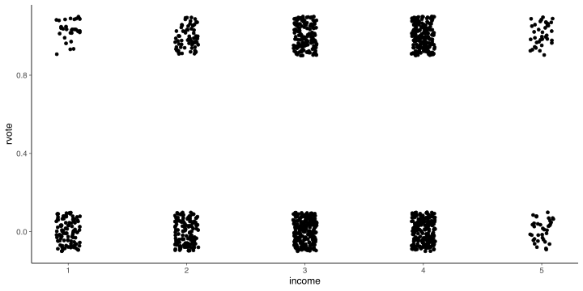
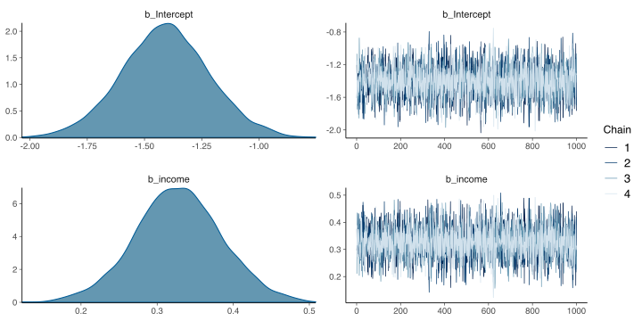
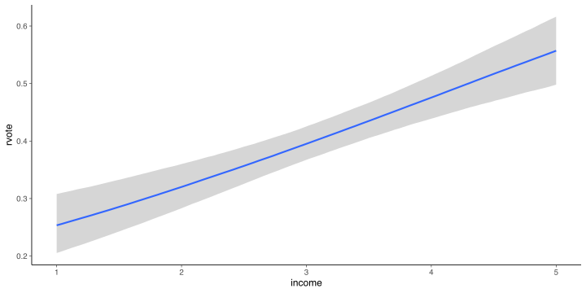
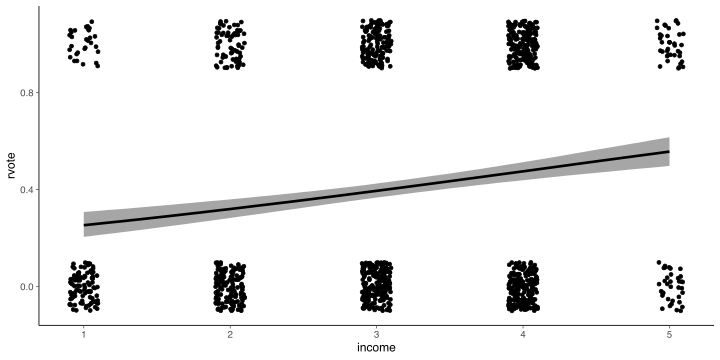
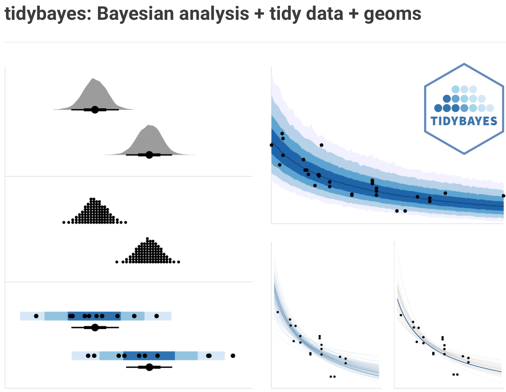
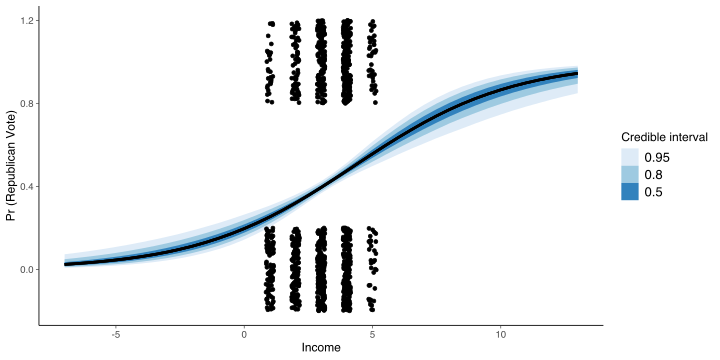
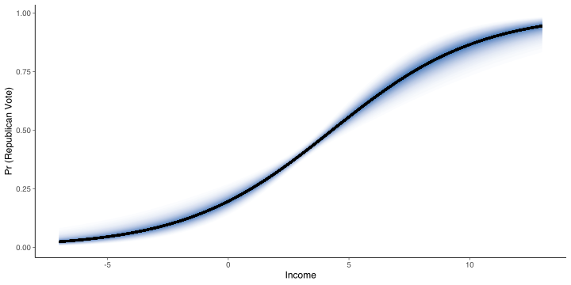
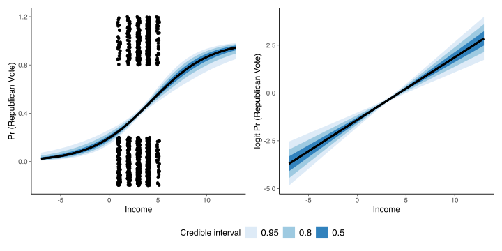

ROS Ch. 13-14
Minho Shin
Ph.D Student
Lab of Cognitive Neuroscience
Department of Brain Sciences
DGIST
Load library
Load libraries that are going to be used throughout the two chapters.
ROS Ch. 13 Logistic Regression
Load NES
First, load data
Plot data
Fit logistic regression using bernoulli
M1 <- brm(
rvote ~ income,
family = bernoulli(link = "logit"),
data = nes92,
refresh = 0,
file = here::here("Ch13-14", "m1_nes.rds")
)
print(M1) Family: bernoulli
Links: mu = logit
Formula: rvote ~ income
Data: nes92 (Number of observations: 1179)
Draws: 4 chains, each with iter = 2000; warmup = 1000; thin = 1;
total post-warmup draws = 4000
Population-Level Effects:
Estimate Est.Error l-95% CI u-95% CI Rhat Bulk_ESS Tail_ESS
Intercept -1.41 0.19 -1.79 -1.02 1.00 3563 2523
income 0.33 0.06 0.21 0.44 1.00 3785 2468
Draws were sampled using sample(hmc). For each parameter, Bulk_ESS
and Tail_ESS are effective sample size measures, and Rhat is the potential
scale reduction factor on split chains (at convergence, Rhat = 1).Fit logistic regression using binomial
M1_1 <- brm(
rvote | trials(1) ~ income,
family = binomial(link = "logit"),
data = nes92,
refresh = 0,
file = here::here("Ch13-14", "m1_1_nes.rds")
)
print(M1_1) Family: binomial
Links: mu = logit
Formula: rvote | trials(1) ~ income
Data: nes92 (Number of observations: 1179)
Draws: 4 chains, each with iter = 2000; warmup = 1000; thin = 1;
total post-warmup draws = 4000
Population-Level Effects:
Estimate Est.Error l-95% CI u-95% CI Rhat Bulk_ESS Tail_ESS
Intercept -1.41 0.19 -1.78 -1.05 1.00 3265 2877
income 0.33 0.06 0.22 0.44 1.00 3405 2640
Draws were sampled using sample(hmc). For each parameter, Bulk_ESS
and Tail_ESS are effective sample size measures, and Rhat is the potential
scale reduction factor on split chains (at convergence, Rhat = 1).Bernoulli and Binomial
If we have \(n_i\) coins, and each coin has a head probability \(p_i\), the number of heads \(y_i\) follows the binomial distribution:
\[ y_i \sim \mathrm{Binomial}(n_i, p_i) \]
When \(n_i = 1\), this is equivalent to Bernoulli distribution:
\[ y_i \sim \mathrm{Bernoulli}(p_i) \]
We can print out the actual code in Stan
// generated with brms 2.16.3
functions {
}
data {
int<lower=1> N; // total number of observations
int Y[N]; // response variable
int<lower=1> K; // number of population-level effects
matrix[N, K] X; // population-level design matrix
int prior_only; // should the likelihood be ignored?
}
transformed data {
int Kc = K - 1;
matrix[N, Kc] Xc; // centered version of X without an intercept
vector[Kc] means_X; // column means of X before centering
for (i in 2:K) {
means_X[i - 1] = mean(X[, i]);
Xc[, i - 1] = X[, i] - means_X[i - 1];
}
}
parameters {
vector[Kc] b; // population-level effects
real Intercept; // temporary intercept for centered predictors
}
transformed parameters {
}
model {
// likelihood including constants
if (!prior_only) {
target += bernoulli_logit_glm_lpmf(Y | Xc, Intercept, b);
}
// priors including constants
target += student_t_lpdf(Intercept | 3, 0, 2.5);
}
generated quantities {
// actual population-level intercept
real b_Intercept = Intercept - dot_product(means_X, b);
}brms::pp_check()

Plot fitted params
Plot fitted curve using brms::conditional_effects
Plot data and prediction together
Visualization of Bayesian inference using tidybayes package
Prepare prediction data using posterior_epred
# A tibble: 164,000 × 6
# Groups: income, .row [41]
income .row .chain .iteration .draw .epred
<dbl> <int> <int> <int> <int> <dbl>
1 -7 1 NA NA 1 0.0362
2 -7 1 NA NA 2 0.0259
3 -7 1 NA NA 3 0.0198
4 -7 1 NA NA 4 0.0283
5 -7 1 NA NA 5 0.0146
6 -7 1 NA NA 6 0.0358
7 -7 1 NA NA 7 0.0274
8 -7 1 NA NA 8 0.0185
9 -7 1 NA NA 9 0.0329
10 -7 1 NA NA 10 0.0160
# … with 163,990 more rowsPlot posterior prediction
Using gradient (R > 4.2.0)
Predict using posterior_linpred
Predict using posterior_linpred
ROS Ch. 14 Working with Logistic Regression
Marginal Effects
- Average Marginal Effects (AMEs)
- Marginal Effects at the Mean (MEM)
- Marginal Effects at Representative values (MERs)
In ROS, average predicted probability refers to (average) marginal effects.
What does emmeans do?
emmeans()estimates marginal effects at the means (MEMs) and not average marginal effects (AMEs). It works wonderfully in the case of linear models with identity link functions, where AMEs and MEMs align.1
Computing numerical derivatives and AME
For a small \(h\),
\[ f'(x) = \lim_{h \rightarrow 0} \frac{f(x+h) - f(x)}{h} \approx \frac{f(x+h) - f(x)}{h} \]
AME (for a continuous variable) can be computed by
\[ \mathbb{E}[f'(x)] \approx \mathbb{E}\left[\frac{f(x+h) - f(x)}{h}\right] = \mathbb{E}\left[\frac{f(x+h)}{h}\right] - \mathbb{E}\left[\frac{f(x)}{h}\right] \]
In R,
Computing numerical derivatives and AME
Alternatively, we can use two-sided derivatives,
\[ f'(x) = \lim_{h \rightarrow 0} \frac{f(x+h) - f(x-h)}{2h} \approx \frac{f(x+h) - f(x-h)}{2h} \]
Let’s do this with a simple example
Load arsenic data
Fit arsenic data
M2 <- brm(
switch ~ dist100 + arsenic + educ4,
family = bernoulli(link = "logit"),
data = wells,
refresh = 0,
file = here::here("Ch13-14", "m2_arsenic.rds")
)
print(M2) Family: bernoulli
Links: mu = logit
Formula: switch ~ dist100 + arsenic + educ4
Data: wells (Number of observations: 3020)
Draws: 4 chains, each with iter = 2000; warmup = 1000; thin = 1;
total post-warmup draws = 4000
Population-Level Effects:
Estimate Est.Error l-95% CI u-95% CI Rhat Bulk_ESS Tail_ESS
Intercept -0.21 0.09 -0.39 -0.03 1.00 5333 3655
dist100 -0.90 0.10 -1.10 -0.70 1.00 3959 2859
arsenic 0.47 0.04 0.39 0.55 1.00 3505 3071
educ4 0.17 0.04 0.10 0.25 1.00 4410 3057
Draws were sampled using sample(hmc). For each parameter, Bulk_ESS
and Tail_ESS are effective sample size measures, and Rhat is the potential
scale reduction factor on split chains (at convergence, Rhat = 1).Average predictive comparison
Do it by ourselves using posterior_epred
Compute AME using posterior_epred
h <- 1e-4
selected_val <- "dist100"
newwells <- wells |>
mutate({{selected_val}} := !!sym(selected_val) + h)
predicted_orig <- posterior_epred(M2)
predicted_new <- posterior_epred(M2, newdata = newwells)
AME <- rowMeans(predicted_new) / h - rowMeans(predicted_orig) / h
knitr::kable(posterior_summary(AME))| Estimate | Est.Error | Q2.5 | Q97.5 |
|---|---|---|---|
| -0.2044788 | 0.0224859 | -0.2481398 | -0.1612425 |
Using marginaleffects
Reproducing textbook using marginaleffects?
newdata <- M2 |>
marginaleffects::datagrid(
dist100 = c(0, 1),
grid_type = "counterfactual",
model = _
)
M2 |>
marginaleffects::marginaleffects(
newdata = newdata,
variables = "dist100"
) |>
summary()Average marginal effects
Term Effect 2.5 % 97.5 %
1 dist100 -0.1986 -0.2386 -0.1582
Model type: brmsfit
Prediction type: response Using brmsmargins
h <- 1e-4
ames <- brmsmargins::brmsmargins(
M2,
add = data.frame(dist100 = c(0,h)),
contrasts = cbind("AME x" = c(-1/h, 1/h)),
effects = "fixedonly",
CI = .95,
CIType = "HDI"
)
print(ames$Summary) M Mdn LL UL PercentROPE PercentMID CI CIType
1: 0.5752214 0.5754105 0.5587245 0.5931783 NA NA 0.95 HDI
2: 0.5752010 0.5753894 0.5587022 0.5931569 NA NA 0.95 HDI
ROPE MID
1: <NA> <NA>
2: <NA> <NA>Using brmsmargins with two-sided derivatives
h <- 1e-4
ames_two <- brmsmargins::brmsmargins(
M2,
add = data.frame(dist100 = c(-h,h)),
contrasts = cbind("AME x" = c(-1/(2*h), 1/2*h)),
effects = "fixedonly",
CI = .95,
CIType = "HDI"
)
print(ames_two$Summary) M Mdn LL UL PercentROPE PercentMID CI CIType
1: 0.5752419 0.5754316 0.5587468 0.5931997 NA NA 0.95 HDI
2: 0.5752010 0.5753894 0.5587022 0.5931569 NA NA 0.95 HDI
ROPE MID
1: <NA> <NA>
2: <NA> <NA>Reproducing textbook using brmsmargins?
ames2 <- brmsmargins::brmsmargins(
M2,
newdata = newdata,
at = data.frame(dist100 = c(0,1)),
contrasts = cbind("AME x" = c(-1, 1)),
effects = "fixedonly",
CI = .95,
CIType = "HDI"
)
print(ames2$ContrastSummary) M Mdn LL UL PercentROPE PercentMID CI
1: -0.2043279 -0.2048851 -0.2478885 -0.1603878 NA NA 0.95
CIType ROPE MID Label
1: HDI <NA> <NA> AME xReading materials
marginaleffectsvs. alternative software- “Marginalia” by Andrew Heiss
brmsmargins- “Interpreting Model Estimates: Marginal Effects” by Marcelo Coca Perraillon
- “Using Stata’s Margins Command to Estimate and Interpret Adjusted Predictions and Marginal Effects” by Richard Williams